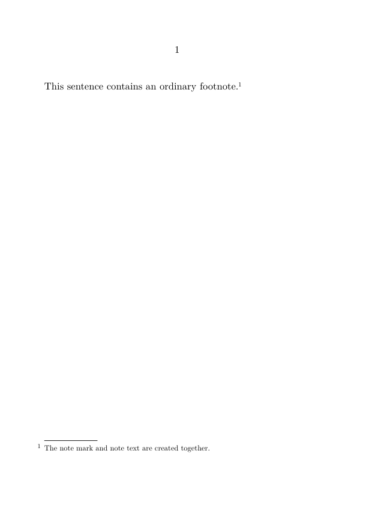
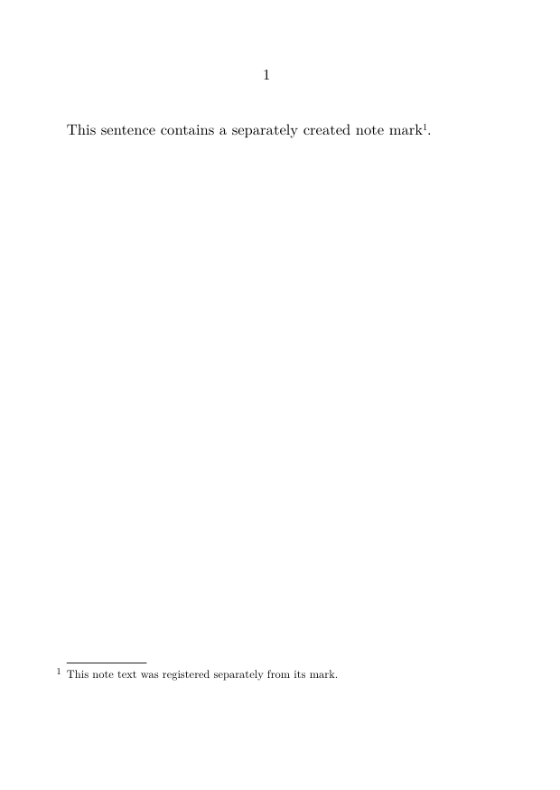
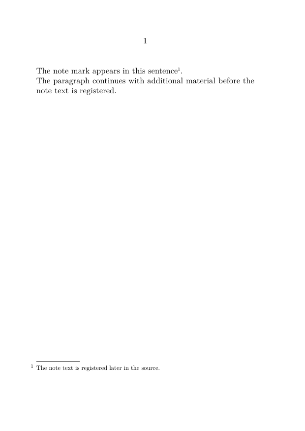
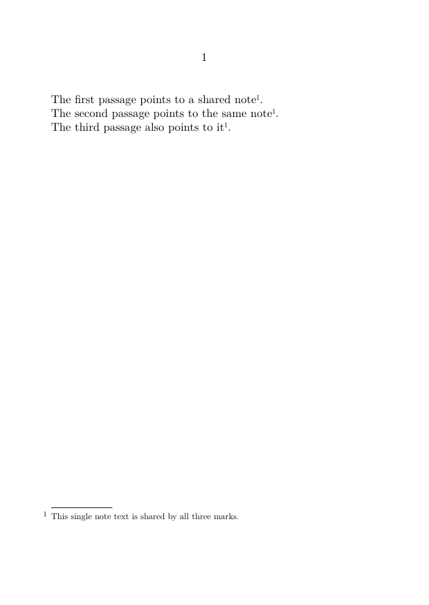
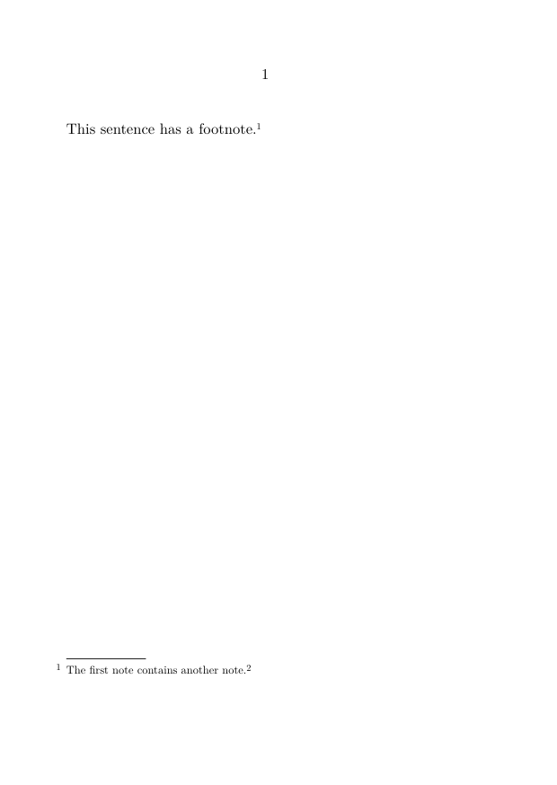
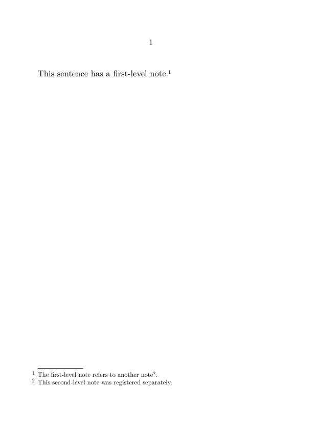
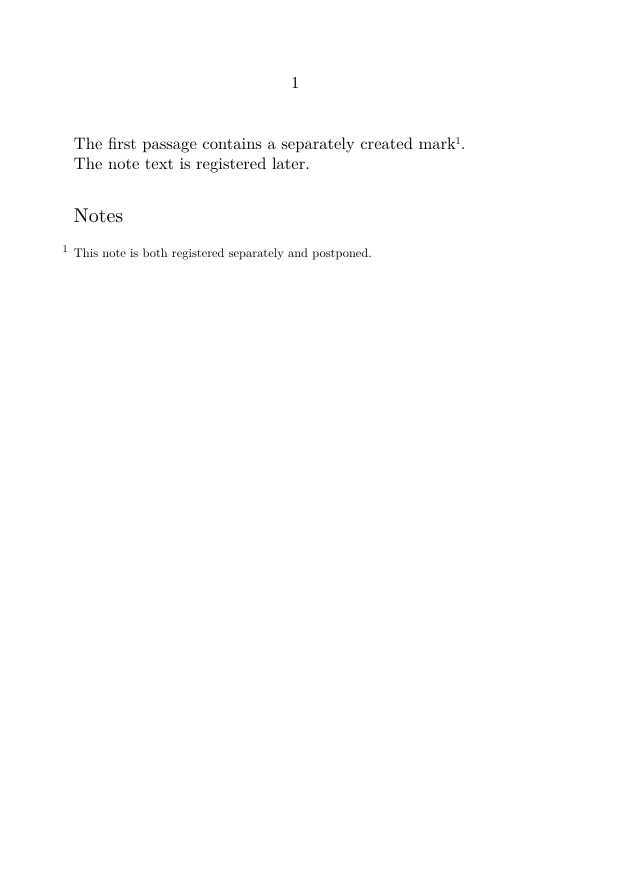
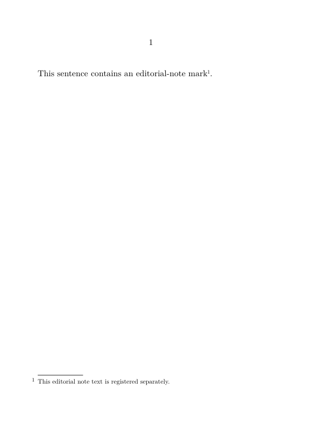
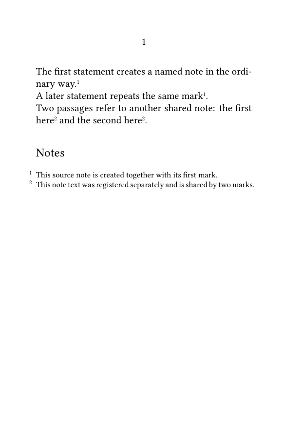

Footnotes in ConTeXt · Overview · Tutorial · How-to guides · Separating a note mark from its text · Reference · Explanation · Glossary
🚧 Under construction — This guide is currently being revised. Contributions are welcome, particularly for Sections 7 and 7.1, which discuss nested notes and still require further testing and clarification.
Guide 2 — Basic note operations · Previous: Referring to a footnote more than once · How-to guides overview · Next: Formatting footnotes
Contents
- 1 1. Goal
- 2 2. Understand the ordinary case
- 3 3. Print the mark and register the note text separately
- 4 4. Register the note text later in the source
- 5 5. Point several marks to one note entry
- 6 6. Prefer an ordinary named footnote when possible
- 7 7. Control nested notes
- 8 8. Combine separate registration with postponed placement
- 9 9. Use a custom note series
- 10 10. Common mistakes
- 11 11. Complete example
- 12 12. What this guide has established
- 13 13. Next steps
1. Goal
Print a note mark and register its corresponding note text at different points in the source.
This is useful when:
- several passages must refer to one note entry;
- the note mark must appear before the note text is registered;
- a macro creates marks and note text in different stages;
- nested or deferred-note situations require explicit control;
-
the ordinary
\footnotecommand does not provide the required separation directly.
The basic method is:
\note[reference]
\setnotetext
[footnote]
[reference]
{note text}
Result
The note mark is printed where \note occurs, while the corresponding note text is registered separately with \setnotetext.
2. Understand the ordinary case
The ordinary command:
\footnote{note text}
normally performs two operations at once:
- it prints a note mark in the running text;
- it registers the corresponding note text.
2.1. MWE: an ordinary footnote
-
\setuppapersize[A6] \starttext This sentence contains an ordinary footnote.\footnote {The note mark and note text are created together.} \stoptext
-

For most documents, this direct form is the simplest method.
Use separation only when needed
Do not replace every ordinary \footnote with separate mark and text commands.
Use explicit separation only when the source structure requires additional control.
3. Print the mark and register the note text separately
Use one stable internal reference in both commands:
\note[foot:manual]
\setnotetext
[footnote]
[foot:manual]
{note text}
3.1. MWE: separate registration
-
\setuppapersize[A6] \starttext This sentence contains a separately created note mark \note[foot:manual]. \setnotetext [footnote] [foot:manual] {This note text was registered separately from its mark.} \stoptext
-

The stable internal reference foot:manual connects the mark with the registered note text.
| Command | Role |
|---|---|
\note[reference]
|
Prints a note mark belonging to the predefined footnote series.
|
\setnotetext[footnote][reference]{...}
|
Registers the corresponding note text without printing another mark at that point. |
4. Register the note text later in the source
The note text does not have to be registered immediately after the mark.
4.1. MWE: deferred registration
-
\setuppapersize[A6] \starttext The note mark appears in this sentence\note[foot:later]. The paragraph continues with additional material before the note text is registered. \setnotetext [footnote] [foot:later] {The note text is registered later in the source.} \stoptext
-

Keep related source commands reasonably close
Although the mark and the registration of its note text may be separated, excessive distance makes the source harder to maintain and increases the risk of mismatched references.
5. Point several marks to one note entry
Several occurrences of \note may use the same stable internal reference.
5.1. MWE: several marks and one registered text
-
\setuppapersize[A6] \starttext The first passage points to a shared note\note[foot:common]. The second passage points to the same note\note[foot:common]. The third passage also points to it\note[foot:common]. \setnotetext [footnote] [foot:common] {This single note text is shared by all three marks.} \stoptext
-

Only one note entry is produced.
One stable reference identifies one logical note
Every mark using foot:common refers to the same registered note text and the same resulting entry.
For the simpler case in which the note text can be given at the first occurrence, see:
6. Prefer an ordinary named footnote when possible
When the note text can be supplied at its first logical occurrence, use the simpler form:
First passage.\footnote[foot:shared]
{Shared note text.}
Later passage\note[foot:shared].
This creates the first mark and the note text together, then repeats the existing mark later.
Use \setnotetext only when the mark and note text genuinely need to be created separately.
7. Control nested notes
Nested notes are a more advanced use case.
A direct nested construction may be sufficient in a simple document:
-
\setuppapersize[A6] \starttext This sentence has a footnote.\footnote {The first note contains another note.\footnote {This is the nested note.}} \stoptext
-

More complex nesting may produce an order that differs from the editor's intended logical sequence, because the inner note is encountered while the outer note is being composed.
Nested notes require careful testing
The order in which TeX reads and composes nested material may affect the resulting sequence of note entries.
7.1. Register nested note text explicitly
A more controlled structure prints the later note mark inside the first note and registers the corresponding text separately.
-
\setuppapersize[A6] \starttext This sentence has a first-level note.\footnote {The first-level note refers to another note \note[foot:second].} \setnotetext [footnote] [foot:second] {This second-level note was registered separately.} \stoptext
-

The sequence is:
-
the first-level note is created with
\footnote; -
the second note mark is printed inside the first note with
\note[foot:second]; -
the corresponding note text is registered with
\setnotetext.
Explicit registration makes the intended relation visible
The source clearly distinguishes the mark placed inside the first note from the separately registered text of the second note.
8. Combine separate registration with postponed placement
Separating the mark from the note text is independent of the final placement of the note entry.
8.1. MWE: separately registered and postponed footnote
-
\setuppapersize[A6] \setupnote [footnote] [location=text] \starttext The first passage contains a separately created mark \note[foot:postponed]. The note text is registered later. \setnotetext [footnote] [foot:postponed] {This note is both registered separately and postponed.} \subject{Notes} \placefootnotes \stoptext
-

The two operations remain distinct:
-
\setnotetextregisters the note text; -
\placefootnotesplaces the resulting entry.
For repeated placement at structural boundaries, see:
9. Use a custom note series
For a custom note series, specify both the series name and the stable internal reference.
The generic forms are:
\note[series][reference]
\setnotetext
[series]
[reference]
{note text}
9.1. MWE: separate registration in a custom series
-
\setuppapersize[A6] \definenote [EdNote] [footnote] \starttext This sentence contains an editorial-note mark \note[EdNote][ed:manual]. \setnotetext [EdNote] [ed:manual] {This editorial note text is registered separately.} \stoptext
-

Custom series require the generic commands
The command \definenote[EdNote][footnote] creates \EdNote for ordinary editorial notes.
When the mark and note text must be created separately, use \note[EdNote][reference] and \setnotetext[EdNote][reference]{...}.
10. Common mistakes
10.1. Using different references
These commands do not identify the same logical note:
\note[foot:source]
\setnotetext
[footnote]
[foot:sources]
{note text}
The references foot:source and foot:sources are different.
Use exactly the same spelling, capitalization, and punctuation.
10.2. Registering the note text more than once
Register one note text for one stable internal reference.
Repeated registration may create duplicate or conflicting entries.
10.3. Forgetting to register the note text
Every separately created note mark must eventually be matched by registered note text.
A mark without corresponding text does not produce a complete logical note.
10.4. Repeating
\footnote
instead of repeating the mark
Repeating \footnote creates separate notes.
Use one stable internal reference and repeat the mark with \note.
10.5. Omitting the series name for a custom note
For a custom series, use:
\note[EdNote][ed:manual]
\setnotetext
[EdNote]
[ed:manual]
{note text}
Most frequent source of errors
A missing, misspelled, or mismatched series name or stable internal reference breaks the relation between the note mark and the registered note text.
11. Complete example
The following MWE combines:
- one ordinary named footnote;
- one later repetition of its mark;
- one separately registered note shared by two marks;
- postponed placement;
- a smaller body font for note entries.
11.1. MWE: named and separately registered notes
-
\setuppapersize[A6] \setupbodyfont [libertinus,10pt] \setupnote [footnote] [location=text, bodyfont=small] \starttext The first statement creates a named note in the ordinary way.\footnote[foot:source] {This source note is created together with its first mark.} A later statement repeats the same mark\note[foot:source]. Two passages refer to another shared note: the first here\note[foot:shared] and the second here\note[foot:shared]. \setnotetext [footnote] [foot:shared] {This note text was registered separately and is shared by two marks.} \startsubject[title={Notes}] \placefootnotes \stopsubject \stoptext
-

Compile the example and check that:
- the source note creates one entry and two marks;
- the separately registered note has two marks but only one entry;
- all entries are collected under the heading “Notes”;
- the note entries use the smaller body font;
- no repeated mark creates a duplicate entry.
12. What this guide has established
To separate a note mark from its text:
-
print the mark with
\note[reference]; -
register the note text with
\setnotetext[footnote][reference]{...}; - use the same stable internal reference in both commands;
-
repeat
\notewhen several passages refer to one logical note; - use explicit registration when nested or deferred-note situations require greater control;
- specify the note series for custom notes.
The essential distinction is between printing a note mark and registering the corresponding note text.
The ordinary \footnote command performs both operations together; \note and \setnotetext allow them to be controlled separately.
13. Next steps
13.1. Continue with the next guide
- Refer to a footnote more than once
- Place footnotes at the end of a section or chapter
- Define and manage multiple note series
- Use local notes in tables, floats, and boxes
13.3. Consult the documentation
- Consult the note-command reference
- Understand the note mechanism
- Check the terminology used in the footnote documentation
Guide 2 — Basic note operations · Previous: Referring to a footnote more than once · How-to guides overview · Next: Formatting footnotes
Footnotes in ConTeXt · Overview · Tutorial · How-to guides · Separating a note mark from its text · Reference · Explanation · Glossary